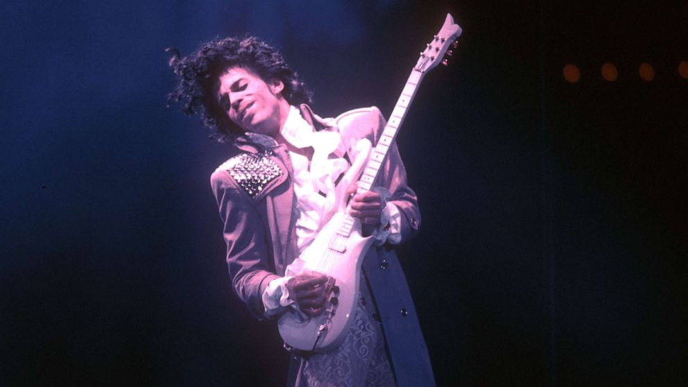
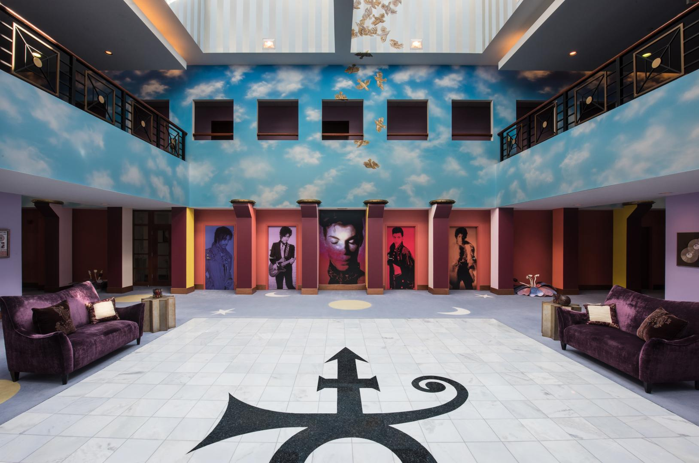
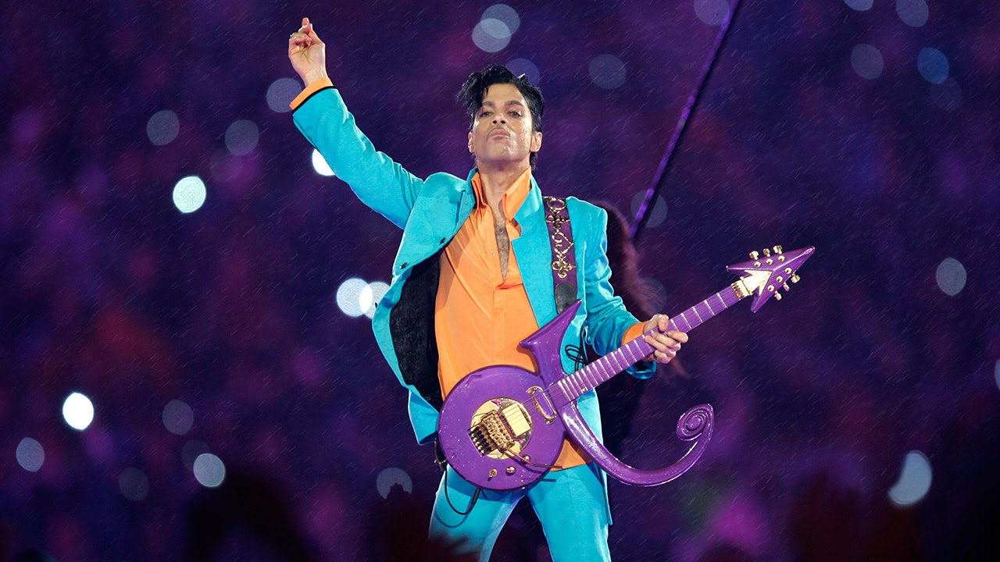
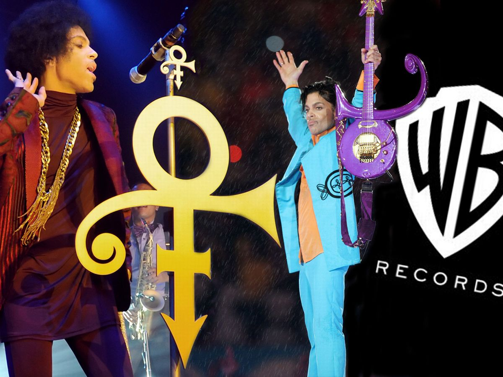
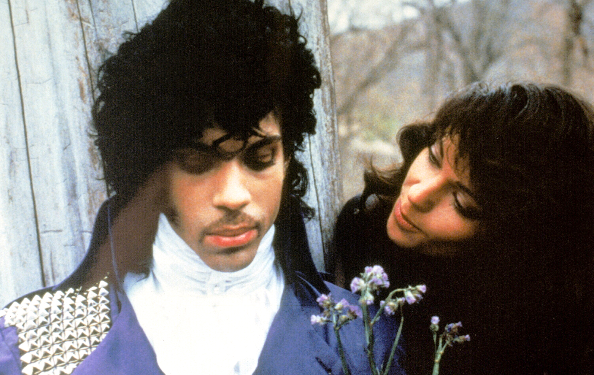

Prince's Estate Hosts Watch Party for COVID-19 Relief
 "Prince and the Revolution: Live" was hosted on Prince's YouTube channel on Thursday, May 14th, 2020 to Sunday, May 17th, 2020 to raise money for the World Health Organization during the pandemic. It was a concert film from his March 1985 Purple Rain Tour at the Carrier Dome in Syracuse, New York.
Prince Dies at His Paisley Home in Minnesota
Prince dies at the age of 57 in his Paisley Park home on April 21, 2016. He won 7 Grammy Awards in his lifetime. Paisley Park is open to tours and tickets are available in advance online.
Can You Make It Rain Harder?
Prince performs at Super Bowl XLI with the Foo Fighters on Sunday, February 4, 2007 at the Hard Rock Stadium in Miami Gardens, FL. It would be considered one of the most iconic Superbowl performances of all time.
Artist Formerly Known as Prince
On June 7, 1993 due to a dispute with Warner Bros record label, he changed his name to this unpronouceable symbol; in an explanation he co-wrote with Neal Karlen, a former Rolling Stone writer, "it's all about thinking in new ways, tuning in 2 a new free-quency". In 2000 after his contract ended, he returned to the name Prince.
Purple Rain
Prince stars as "The Kid" alongside Apollonia in this 1984 movie "Purple Rain". It was mainly filmed in Minneapolis and won an Oscar for Best Original Song Score. He also released the album of the same name.